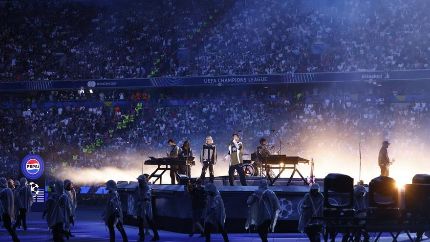

¿Por qué son importantes?

Linkin Park es una de las bandas más influyentes de los últimos 25 años. Su música llegó a personas de todo el mundo porque hablaba de sentimientos reales: el dolor, la rabia, la soledad y la esperanza.
Han vendido más de 100 millones de álbumes en todo el mundo y han ganado 2 premios Grammy. Sus canciones siguen siendo escuchadas por nuevas generaciones que los descubren en redes sociales y plataformas de streaming.
Premios y reconocimientos
| Premio | Año | Por |
|---|---|---|
| Grammy — Mejor Actuación Hard Rock | 2002 | Crawling |
| Grammy — Mejor Actuación Hard Rock | 2006 | Numb/Encore (con Jay-Z) |
| MTV Video Music Award | 2001 | Crawling |
| Billboard Music Award | 2001 | Álbum del año — Hybrid Theory |
| American Music Award | 2003 | Artista favorito de rock |
Su impacto en la salud mental
Chester Bennington habló públicamente sobre su lucha con la depresión y las adicciones. Eso hizo que muchas personas se sintieran menos solas. Sus letras ayudaron a mucha gente a expresar lo que sentían cuando no encontraban las palabras.
Después de su muerte, la banda creó la fundación One More Light para apoyar la concientización sobre la salud mental. También fundaron Music for Relief, una organización que ayuda a víctimas de desastres naturales alrededor del mundo.
Influencia en otras bandas
Linkin Park influyó en muchas bandas que vinieron después, como Hollywood Undead, Bring Me the Horizon y Papa Roach. Su manera de combinar géneros abrió puertas para que muchos otros artistas experimentaran con su música.